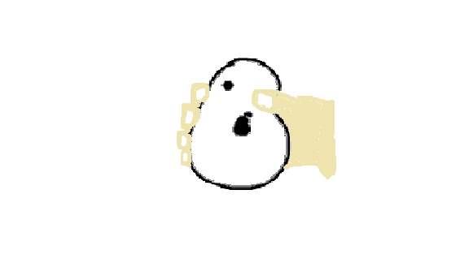

This company started back in 2010 and was just a work in progress at that time. We didn't know how far it would go or how much people would love it. We started off as a very small company and had our big break as we sold the earliest version of the Pear Phone to feature on Nickelodeon. We had the idea to have it shown all over the world and be first introduced on a very popular television channel to gain publicity. It was featured in shows like Victorious and ICarly. Fans loved it and we haven't looked back since. The Pear Phone has since had numerous upgrades and has only gotten better!
Currently we have the Pear Phone, Pear Phone Max, and Pear Phone Mini for sale on our website. You can go to different tabs to learn more about pricing, info, and reviews to figure out if this phone is what you are looking for. Welcome to the Pear Phone family.